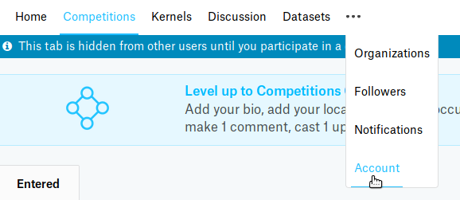
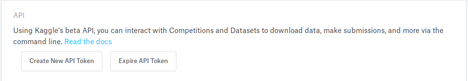
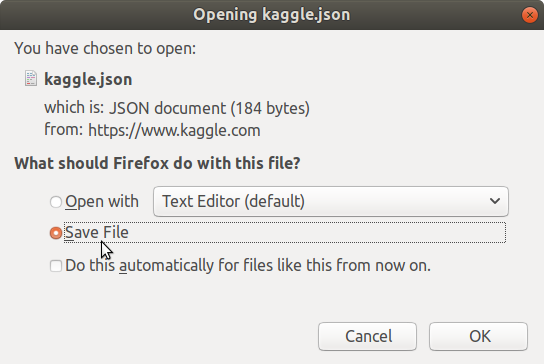

Set Up the Kaggle Command-Line Command
These are my notes as I set up the command-line interface. The official instructions are in the README on github.
Install the Command
The code is available through pypi so you can install it through pip. Their instructions say to install it at the user-level but I'm doing it in a virtualenv so that actually doesn't work for me, instead I did a regular pip install (after installing wheel).
pip install kaggle
Get Your Credentials
Download the JSON File From Kaggle
Log in to your kaggle account and click on the Account menu (it's hidden until you hover over the drop-down widget).

Scroll down to the API box and click on Create New API Token.

This will start a file download, if it prompts you save it to your computer.

Set Up the File
Store this file in a folder named .kaggle.
mkdir ~/.kaggle mv ~/Downloads/kaggle.json ~/.kaggle/
To be on the safe side, change the permissions on the file so that other users can't read it.
chmod 600 ~/.kaggle/kaggle.json
If you look in the file you'll see that it just has a JSON object with your username and API key.
{"username":"bumblebee","key":"8b970a13a2cfcfb7a77bdb8b4effaebc"}
The instructions say you could also export the values as environment variables, but I'll leave it like this for now.
Test it out
It's a python command that uses the basic help system you would expect if you've used python command-line programs before.
kaggle --help
usage: kaggle [-h] [-v] {competitions,c,datasets,d,kernels,k,config} ...
optional arguments:
-h, --help show this help message and exit
-v, --version show program's version number and exit
commands:
{competitions,c,datasets,d,kernels,k,config}
Use one of:
competitions {list, files, download, submit, submissions, leaderboard}
datasets {list, files, download, create, version, init, metadata, status}
config {view, set, unset}
competitions (c) Commands related to Kaggle competitions
datasets (d) Commands related to Kaggle datasets
kernels (k) Commands related to Kaggle kernels
config Configuration settings